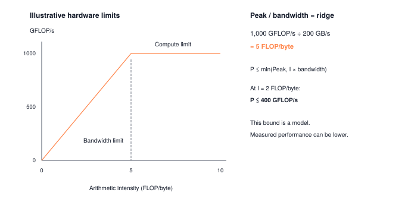

Module 14: Profiling
You cannot optimize what you have not measured. Profiling is the systems skill that turns “I think this is slow” into “this layer spends 62% of its time waiting on HBM reads at 5% of peak GFLOP/s.” Before you reach for quantization, kernel fusion, or KV caching, you need numbers: parameter count, FLOPs per forward pass, peak activation memory, median latency, and an arithmetic-intensity reading on the roofline. This module builds those instruments end-to-end so every subsequent optimization module has ground truth to point at.
OPTIMIZATION TIER | Difficulty: ●●○○ | Time: 3-5 hours | Prerequisites: 01-13
Prerequisites: Modules 01-13 means you should have:
- Built the complete ML stack (Modules 01-08)
- Implemented CNN architectures (Module 09) or Transformers (Modules 10-13)
- Models to profile and optimize
Why these prerequisites: You’ll profile models built in Modules 1-13. Understanding the implementations helps you interpret profiling results — for example, why attention is memory-bound.
🎧 Audio Overview
Listen to an AI-generated overview.
Overview
You have built a working ML framework. Now you have to make it fast. The Optimization Tier starts here, and it starts with a rule that almost every engineer breaks at least once: measure before you optimize. Guess at the bottleneck and you will spend a week speeding up code that was never on the critical path.
This module gives you the instruments. You’ll build a profiler that counts parameters, estimates FLOPs, tracks memory, and measures latency with enough statistical rigor that the numbers actually mean something. By the end you can answer the questions every optimization decision rests on: Is this model compute-bound or memory-bound? Which layer dominates? Where will quantization or caching pay off — and where will it waste your time?
Every later module in this tier — quantization, compression, acceleration, KV-caching — depends on the data this profiler produces. Build the instrument first. Then optimize.
The Optimization Tier Flow
Profiling (Module 14) is the gateway to the Optimization tier, which follows Measure → Transform → Validate:
Profiling (14) → Model-Level (15-16) → Runtime (17-18) → Benchmarking (19)
↓ ↓ ↓ ↓
"What's slow?" "Shrink the model" "Speed up execution" "Did it work?"Model-Level Optimizations (15-16) — change the model itself:
- Quantization: FP32 → INT8 for 4× compression
- Compression: Prune unnecessary weights
Runtime Optimizations (17-18) — change how execution happens:
- Acceleration: Vectorization, kernel fusion (general-purpose)
- Memoization: KV-cache for transformers (domain-specific)
You can’t optimize what you can’t measure. Profiling comes first because every other tier depends on its output.
Learning Objectives
- Implement a comprehensive Profiler class that measures parameters, FLOPs, memory, and latency
- Analyze performance characteristics to identify compute-bound vs memory-bound workloads
- Master statistical measurement techniques with warmup runs and outlier handling
- Connect profiling insights to optimization opportunities in quantization, compression, and caching
What You’ll Build

Implementation roadmap:
Table 1 lays out the implementation in order, one part at a time.
| Step | What You’ll Implement | Key Concept |
|---|---|---|
| 1 | count_parameters() |
Model size and memory footprint |
| 2 | count_flops() |
Computational cost estimation |
| 3 | measure_memory() |
Activation and gradient memory tracking |
| 4 | measure_latency() |
Statistical timing with warmup |
| 5 | profile_forward_pass() |
Comprehensive performance analysis |
| 6 | profile_backward_pass() |
Training cost estimation |
The pattern you’ll enable:
# Comprehensive model analysis for optimization decisions
profiler = Profiler()
profile = profiler.profile_forward_pass(model, input_data)
print(f"Bottleneck: {profile['bottleneck']}") # "memory" or "compute"What You’re NOT Building (Yet)
To keep this module focused, you will not implement:
- GPU profiling (we measure CPU performance with NumPy)
- Distributed profiling (that’s for multi-GPU setups)
- CUDA kernel profilers (PyTorch uses
torch.profilerfor GPU analysis) - Layer-by-layer visualization dashboards (TensorBoard provides this)
You are building the measurement foundation. Visualization and GPU profiling come with production frameworks.
API Reference
This section provides a quick reference for the Profiler class you’ll build. Use it while implementing and debugging.
Constructor
Profiler()Initializes profiler with measurement tracking structures.
Core Methods
Table 2 lists the methods in this group.
| Method | Signature | Description |
|---|---|---|
count_parameters |
count_parameters(model) -> int |
Count total trainable parameters |
count_flops |
count_flops(model, input_shape) -> int |
Count FLOPs per sample (batch-size independent) |
measure_memory |
measure_memory(model, input_shape) -> Dict |
Measure memory usage components |
measure_latency |
measure_latency(model, input_tensor, warmup, iterations) -> float |
Measure inference latency in milliseconds |
Analysis Methods
Table 3 lists the methods in this group.
| Method | Signature | Description |
|---|---|---|
profile_layer |
profile_layer(layer, input_shape) -> Dict |
Comprehensive single-layer profile |
profile_forward_pass |
profile_forward_pass(model, input_tensor) -> Dict |
Complete forward pass analysis |
profile_backward_pass |
profile_backward_pass(model, input_tensor) -> Dict |
Training iteration analysis |
Utility Functions
Table 4 lists the methods in this group.
| Function | Signature | Description |
|---|---|---|
quick_profile |
quick_profile(model, input_tensor, profiler=None) -> Dict |
One-call convenience profiling |
analyze_weight_distribution |
analyze_weight_distribution(model, percentiles) -> Dict |
Statistical analysis of model weight distributions |
Core Concepts
This section covers the fundamental ideas you need to understand profiling deeply. Measurement is the foundation of optimization, and understanding what you’re measuring matters as much as how you measure it.
Why Profile First
Optimization without measurement is guessing. You spend a week speeding up a layer that wasn’t on the critical path while the real bottleneck sits untouched. Profiling replaces intuition with ground truth: where time and memory actually go, not where you assumed they did.
Take a slow transformer. Is it attention? The feed-forward layers? Matrix multiplication? Memory transfers? Without numbers, you’re picking randomly. With numbers, you might find that 80% of time is in attention and it’s memory-bound — and now you know to reach for FlashAttention rather than a faster matmul kernel.
The workflow is always the same: measure to baseline, analyze to find the bottleneck, optimize the critical path (not every operation), measure again to verify. Repeat until the numbers hit your target. Your profiler implements the measure-and-analyze steps; later modules supply the optimizations.
Timing Operations
Accurate timing is harder than it looks in modern systems due to OS variance, cache warmup effects, and measurement overhead. To counteract these hidden variables, your measure_latency method implements a rigorous statistical approach, ensuring the hardware reaches a steady state before any measurements are recorded:
The code in ?@lst-14-measure-latency makes this concrete.
def measure_latency(self, model, input_tensor, warmup: int = 10, iterations: int = 100) -> float:
"""Measure model inference latency with statistical rigor."""
# Warmup runs to stabilize performance
for _ in range(warmup):
_ = model.forward(input_tensor)
# Measurement runs
times = []
for _ in range(iterations):
start_time = time.perf_counter()
_ = model.forward(input_tensor)
end_time = time.perf_counter()
times.append((end_time - start_time) * 1000) # Convert to milliseconds
# Calculate statistics - use median for robustness
times = np.array(times)
median_latency = np.median(times)
return float(median_latency): Listing 14.1 — measure_latency with warmup and median. Runs warmup iterations to reach steady state, then times a fixed number of forward passes and returns the median to reject OS-noise outliers. {#lst-14-measure-latency}
The warmup phase is critical. The first few runs are artificially slow due to cold CPU caches, Python interpreter overhead, and NumPy initialization. Running 10+ warmup iterations forces the system into a steady state, yielding reliable baseline measurements.
Median, not mean. A single OS interrupt or garbage-collection pause during measurement can blow the mean apart; the median ignores it. Median captures typical performance, which is what you want to compare across runs. (For SLA work you also report p95 or p99 — but that’s a separate question.)
Memory Profiling
Memory profiling reveals three distinct components: parameter memory (model weights), activation memory (forward pass intermediate values), and gradient memory (backward pass derivatives). Each has different characteristics and optimization strategies.
Here’s how your profiler tracks memory usage:
The code in ?@lst-14-measure-memory makes this concrete.
def measure_memory(self, model, input_shape: Tuple[int, ...]) -> Dict[str, float]:
"""Measure memory usage during forward pass."""
# Start memory tracking
tracemalloc.start()
# Calculate parameter memory
param_count = self.count_parameters(model)
parameter_memory_bytes = param_count * BYTES_PER_FLOAT32
parameter_memory_mb = parameter_memory_bytes / MB_TO_BYTES
# Create input and measure activation memory
dummy_input = Tensor(np.random.randn(*input_shape))
input_memory_bytes = dummy_input.data.nbytes
# Estimate activation memory (simplified)
activation_memory_bytes = input_memory_bytes * 2 # Rough estimate
activation_memory_mb = activation_memory_bytes / MB_TO_BYTES
# Run forward pass to measure peak memory usage
_ = model.forward(dummy_input)
# Get peak memory
_current_memory, peak_memory = tracemalloc.get_traced_memory()
peak_memory_mb = (peak_memory - _baseline_memory) / MB_TO_BYTES
tracemalloc.stop()
# Calculate efficiency metrics
useful_memory = parameter_memory_mb + activation_memory_mb
memory_efficiency = useful_memory / max(peak_memory_mb, 0.001) # Avoid division by zero
return {
'parameter_memory_mb': parameter_memory_mb,
'activation_memory_mb': activation_memory_mb,
'peak_memory_mb': max(peak_memory_mb, useful_memory),
'memory_efficiency': min(memory_efficiency, 1.0)
}: Listing 14.2 — measure_memory breakdown. Uses tracemalloc to capture peak allocation during a forward pass, then separates parameter, activation, and peak footprints. {#lst-14-measure-memory}
Parameter memory is persistent and batch-independent. A 125M-parameter model uses 500 MB (125M × 4 bytes per float32) whether you process one sample or a thousand.
Activation memory scales with batch size. Double the batch, double the activations. This is why training needs far more memory than inference at the same model size.
Gradient memory matches parameter memory exactly. Every parameter has one gradient, so training that 125M model adds another 500 MB on top of the weights — and that’s before the optimizer state.
Bottleneck Identification and The Roofline Model
The single most critical insight a profiler yields is whether a workload is compute-bound or memory-bound. This classification dictates your entire optimization trajectory. Engineers formalize this relationship using the Roofline Model, a visual performance framework that plots a system’s peak compute throughput (the horizontal “roof”) against its memory bandwidth (the sloped “attic”).
A workload’s placement under the roof is determined by its arithmetic intensity—the ratio of FLOPs executed per byte of memory accessed. The asymptotic complexity of the operation itself dictates where on the roofline it lands: an element-wise add is O(N) FLOPs on O(N) bytes (intensity ≈ 0.08 FLOPs/byte, memory-bound), while a dense N×N matmul is O(N³) FLOPs on O(N²) bytes (intensity grows linearly with N, compute-bound once N is large). Profiling resolves which regime you’re actually in, not just which regime the asymptotics predict.
Compute-bound workloads possess high arithmetic intensity. They reside under the flat roof of the model, limited entirely by the arithmetic logic units (e.g., Tensor Cores or SIMD registers). The hardware has ample data but cannot crunch the numbers fast enough. Optimizations here require dense vectorization, kernel fusion, and lower-precision math (like INT8 or FP8).
Memory-bound workloads have low arithmetic intensity, trapped under the sloping memory bandwidth line. The processor’s arithmetic units sit idle, starved of data because the hardware cannot fetch information from High Bandwidth Memory (HBM) fast enough. Embedding lookups (sparse gathers) and autoregressive generation (token-by-token processing) notoriously fall here. Optimizations must ruthlessly target data movement: improving cache locality, exploiting SRAM tiling, and reducing the precision footprint.
Your profiler calculates this exact dynamic: if you register a meager GFLOP/s despite running on hardware with massive theoretical throughput, your arithmetic intensity is too low—you have hit the memory wall.
The roofline is not just a diagnostic — it is a decision tree. A workload’s position under the roof tells you which lever to pull and which to leave alone. Sitting on the sloped memory bandwidth line? Reducing FLOPs is wasted effort; the chip is already idle waiting on DRAM. You need kernel fusion (Module 17), quantization to shrink per-byte traffic (Module 15), or caching to eliminate redundant reads (Module 18). Sitting under the flat compute roof? Memory is cheap and arithmetic is scarce; reach for structured sparsity, lower precision, or vectorized kernels that keep the ALUs fed. The single most common performance mistake is optimizing the wrong axis: rewriting a compute-bound matmul for better cache locality buys nothing, and fusing a compute-bound kernel can actively hurt by lengthening the critical path. The profiler’s job is to tell you which axis — every subsequent module assumes you have read the roofline correctly.
Profiling Tools
The profiler stands on two Python primitives: time.perf_counter() for timing and tracemalloc for memory.
time.perf_counter() reads the system’s highest-resolution monotonic clock — typically nanosecond precision. It returns wall-clock time, so cache misses, context switches, and every other real-world effect show up in your measurement. That’s a feature, not a bug.
tracemalloc tracks every Python allocation with byte-level precision and reports both current and peak usage. Peak is what catches the spike that crashes your run.
Production profilers layer on GPU support (CUDA events, NVTX markers), distributed tracing, and kernel-level analysis. The instruments get fancier; the loop stays the same: measure, analyze, identify the bottleneck, optimize.
Production Context
Your Implementation vs. PyTorch
Your TinyTorch Profiler and PyTorch’s profiling tools share the same conceptual foundation. The differences are in implementation detail: PyTorch adds GPU support, kernel-level profiling, and distributed tracing. But the core metrics (parameters, FLOPs, memory, latency) are identical.
Table 5 places your implementation side by side with the production reference for direct comparison.
| Feature | Your Implementation | PyTorch |
|---|---|---|
| Parameter counting | Direct tensor size | model.parameters() |
| FLOP counting | Per-layer formulas | FlopCountAnalysis (fvcore) |
| Memory tracking | tracemalloc | torch.profiler, CUDA events |
| Latency measurement | time.perf_counter() | torch.profiler, NVTX |
| GPU profiling | ✗ CPU only | ✓ CUDA kernels, memory |
| Distributed | ✗ Single process | ✓ Multi-GPU, NCCL |
Code Comparison
The following comparison shows equivalent profiling operations in TinyTorch and PyTorch. Notice how the concepts transfer directly, even though PyTorch provides more sophisticated tooling.
from tinytorch.perf.profiling import Profiler
# Create profiler
profiler = Profiler()
# Profile model
params = profiler.count_parameters(model)
flops = profiler.count_flops(model, input_shape)
memory = profiler.measure_memory(model, input_shape)
latency = profiler.measure_latency(model, input_tensor)
# Comprehensive analysis
profile = profiler.profile_forward_pass(model, input_tensor)
print(f"Bottleneck: {profile['bottleneck']}")
print(f"GFLOP/s: {profile['gflops_per_second']:.2f}")import torch
from torch.profiler import profile, ProfilerActivity
# Count parameters
params = sum(p.numel() for p in model.parameters())
# Profile with PyTorch profiler
with profile(activities=[ProfilerActivity.CPU, ProfilerActivity.CUDA]) as prof:
output = model(input_tensor)
# Analyze results
print(prof.key_averages().table(sort_by="cpu_time_total"))
# FLOPs (requires fvcore)
from fvcore.nn import FlopCountAnalysis
flops = FlopCountAnalysis(model, input_tensor)
print(f"FLOPs: {flops.total()}")Let’s walk through the comparison:
- Parameter counting: Both frameworks count total trainable parameters. TinyTorch uses
count_parameters(), PyTorch usessum(p.numel() for p in model.parameters()). - FLOP counting: TinyTorch implements per-layer formulas. PyTorch uses the
fvcorelibrary’sFlopCountAnalysisfor more sophisticated analysis. - Memory tracking: TinyTorch uses
tracemalloc. PyTorch profiler tracks CUDA memory events for GPU memory analysis. - Latency measurement: TinyTorch uses
time.perf_counter()with warmup. PyTorch profiler uses CUDA events for precise GPU timing. - Analysis output: Both provide bottleneck identification and throughput metrics. PyTorch adds kernel-level detail and distributed profiling.
The profiling workflow: measure parameters, FLOPs, memory, and latency to identify bottlenecks. Production frameworks add GPU support and more sophisticated analysis, but the core measurement principles you’re learning here transfer directly.
Why Profiling Matters at Scale
The stakes get larger with the model. A few examples from production:
- GPT-3 (175B parameters) — 652 GB at FP32. Profiling reveals which layers tolerate INT8, which determines whether the model fits on the deployment hardware at all.
- BERT training — 80% of step time in self-attention. That single profiling result is what motivated FlashAttention.
- Image classification, batch 256 — 12 GB of GPU memory used, of which 10 GB is activations. Profiling points straight at gradient checkpointing.
In each case the profiler did not invent the optimization — it told the engineer which optimization was worth implementing. A single session routinely uncovers 10× speedups or 4× memory reductions. The instrument earns its keep on the first run.
Check Your Understanding
Before moving on, verify you can articulate each of the following:
If any of these feels fuzzy, revisit the Core Concepts section (especially the Roofline Model and Timing Operations subsections) before moving on.
Work through the following quantitative exercises. Answers are hidden — try each on paper first.
Q1: Parameter Memory Calculation
A transformer model has 12 layers, each with a feed-forward network containing two Linear layers: Linear(768, 3072) and Linear(3072, 768). How much memory do the feed-forward network parameters consume across all layers?
Each feed-forward network:
- First layer: (768 × 3072) + 3072 = 2,362,368 parameters
- Second layer: (3072 × 768) + 768 = 2,360,064 parameters
- Total per layer: 4,722,432 parameters
Across 12 layers: 12 × 4,722,432 = 56,669,184 parameters.
Memory: 56,669,184 × 4 bytes = 226,676,736 bytes ≈ 216 MB.
That’s just the feed-forward networks. Attention adds more parameters on top.
Q2: FLOP Counting and Computational Cost
A Linear(512, 512) layer processes a batch of 64 samples. Your profiler’s count_flops() method returns FLOPs per sample (batch-size independent). How many FLOPs are required for one sample? For the whole batch, if each sample is processed independently?
Per-sample FLOPs (what count_flops() returns): 512 × 512 × 2 = 524,288 FLOPs.
count_flops() is batch-size independent — it returns per-sample FLOPs whether you pass input_shape=(1, 512) or (64, 512).
For a batch of 64 samples: 64 × 524,288 = 33,554,432 total FLOPs.
Minimum latency at 50 GFLOP/s: 33,554,432 ÷ 50 × 10⁹ = 0.67 ms for the full batch.
That assumes 100% computational efficiency. Real latency is higher because of memory bandwidth and overhead — which is exactly the kind of gap profiling exposes.
Q3: Memory Bottleneck Analysis
A model achieves 5 GFLOP/s on hardware with 100 GFLOP/s peak compute. The memory bandwidth is 50 GB/s. Is this workload compute-bound or memory-bound?
Computational efficiency: 5 GFLOP/s ÷ 100 GFLOP/s = 5% efficiency.
That gap is the giveaway: this workload is memory-bound. The chip can do 100 GFLOP/s but only manages 5, because most of its time is spent waiting on data transfers.
The right optimization strategy is to cut memory traffic — better cache locality, improved data layout, or kernel fusion. Reducing FLOPs won’t help when compute is already idle.
Q4: Training Memory Estimation
A model has 125M parameters (500 MB at FP32). You’re training with the Adam optimizer. What’s the total memory requirement during training, including gradients and optimizer state?
- Parameters: 500 MB
- Gradients: 500 MB (one per parameter)
- Adam momentum: 500 MB (first moment estimates)
- Adam velocity: 500 MB (second moment estimates)
Total: 500 + 500 + 500 + 500 = 2,000 MB (2 GB) — 4× the raw model size, just to train.
That’s only the model state. Activations add more memory that scales with batch size, putting a typical training run in the 4–8 GB range. This 4× factor is why optimizer-state sharding (ZeRO, FSDP) exists.
Q5: Latency Measurement Statistics
You measure latency 100 times and get: median = 10.5 ms, mean = 12.3 ms, min = 10.1 ms, max = 45.2 ms. Which statistic should you report and why?
Report the median (10.5 ms) as the typical latency.
The mean (12.3 ms) is skewed by the outlier (45.2 ms), likely caused by OS interruption or garbage collection. The median is robust to outliers and represents typical performance.
For production SLA planning, you might also report p95 or p99 latency (95th or 99th percentile) to capture worst-case behavior without being skewed by extreme outliers.
Key Takeaways
- Measure before you optimize: intuition about bottlenecks is usually wrong, and a week of profiling saves a month of chasing the wrong layer.
- Arithmetic intensity decides the axis: FLOPs-per-byte places a workload on the roofline and tells you whether to attack compute or memory — the two optimizations are almost never both correct.
- Statistical rigor is not pedantry: warmup + median + confidence intervals are the difference between a real speedup and a noise-driven illusion.
- Training memory is dominated by optimizer state, not weights: Adam multiplies the model footprint ~4× before activations, which is why optimizer sharding (ZeRO/FSDP) exists.
Coming next: Module 15 takes the bottlenecks you just surfaced and attacks the most common one — memory pressure — by compressing FP32 weights to INT8, with your profiler acting as the before/after ground truth.
Further Reading
For students who want to understand the academic foundations and professional practices of ML profiling:
Seminal Papers
Roofline: An Insightful Visual Performance Model - Williams et al. (2009). Introduces the roofline model for understanding compute vs memory bottlenecks. Essential framework for performance analysis. ACM CACM
PyTorch Profiler: Performance Analysis Tool - Ansel et al. (2024). Describes PyTorch’s production profiling infrastructure. Shows how profiling scales to distributed GPU systems. arXiv
MLPerf Inference Benchmark - Reddi et al. (2020). Industry-standard benchmarking methodology for ML systems. Defines rigorous profiling protocols. arXiv
Additional Resources
- Tool: PyTorch Profiler - Production profiling with GPU support
- Tool: TensorFlow Profiler - Alternative framework’s profiling approach
- Book: “Computer Architecture: A Quantitative Approach” - Hennessy & Patterson - Chapter 4 covers memory hierarchy and performance measurement
What’s Next
You now have the instrument. Module 15 picks up the first real optimization it enables: quantization.
You’ll cut FP32 weights down to INT8 — a 4× memory reduction — and use this profiler to answer the question that decides whether quantization is worth applying: which layers tolerate reduced precision, and which ones break? Profile first, quantize second, profile again to verify. You’re about to see why this loop is the foundation of every production deployment.
Preview — how your profiler gets used in future modules:
Table 6 traces how this module is reused by later parts of the curriculum.
| Module | What It Does | Your Profiler In Action |
|---|---|---|
| 15: Quantization | Reduce precision to INT8 | profile_layer() identifies quantization candidates |
| 16: Compression | Prune and compress weights | count_parameters() measures the compression ratio |
| 17: Acceleration | Vectorize computations | measure_latency() validates the speedup |
| 19: Benchmarking | Compare across systems | profile_forward_pass() produces the comparable numbers |
Get Started
- Launch Binder - Run interactively in browser, no setup required
- View Source - Browse the implementation code
Binder sessions are temporary. Download your completed notebook when done, or clone the repository for persistent local work.
e_latency()` validates speedup |